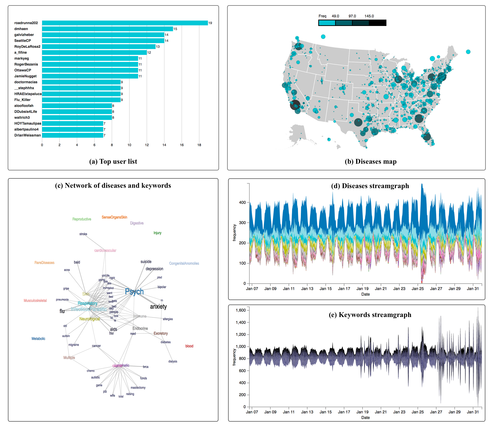

HealthTvizer: Exploring Health Awareness in Twitter Data throughCoordinated Multiple Views
Big Social Media Data Management and Analysis, Online Submission ID #S16208
Overview
Micro-blogging and social media data can help in predicting a variety of events and also able to detect the flow and evolution of the events and incidents like presidential elections and flu spread. Analyzing public user posts and shared information in social media can assist us in measuring various population characteristics, patterns, movements, and as well as the public health conditions. In this paper, we introduce HealthTVizer - a social media analytics tool, for exploring health awareness using Twitter data through interactive and interconnected multiple views. The tools assist a user in achieving a quick summary about the current diseases along with the geographical location on the United States map.
We processed and analyzed over 57 million tweets and pick the tweets related to the diseases using topic modeling. After that, we categorized the tweets in 21 most frequent and discussed diseases on that time frame. We plot the diseases cloud and stream graph to show the change in the discussion about those diseases. Further, we added several visualization methods to find out valuable insights from the data.
HealthTVizer Visualization
HealthTVizer contains coordinated multiple views which highlight different tweet attributes: User ID, geolocation, keywords, time stamp, and the related disease. The following image shows the key features of the HealthTVizer.

Box A: Top user list
The top user list represents the users based on the number of tweets about any particular disease type. After clicking on diseases cloud, the list will automatically update with respect to the corresponding disease. On hovering on the user ID or user tweets count bar, a table will pop up displaying the 20 tweets of that particular user.
Box B: Diseases map
The distribution of top 20 users tweets related to all 21 different diseases is depicted in the United States map represent in Box B. On loading of the application the map shows the user tweets related all the diseases. However, if a viewer clicks on the particular disease from disease cloud the map and user list bar chart will be updated automatically and visualize the related disease tweets locations.
Box C: Network of Diseases and Keywords
The overview network of 20 diseases and top 50 popular keywords from January 6 to January 31, 2017, on Twitter are visualize on Box (c). The thickness of a link indicates the relationships frequency between the diseases and keywords based on the co-location in the same tweets.
Box D:
The diseases streamgraph represents the discussion about 21 diseases obtained by the hashtag of the tweets. The disease streamlines are ordered based on the frequency of the discussion on the related tweets.
Box E:
By default, the diseases keywords streamgraph draw the streamline for top 50 keywords based on the frequency. However, if a user clicks on a disease from the diseases cloud, the keywords streamgraph will update interactively and displays the most frequent 50 keywords about that disease.